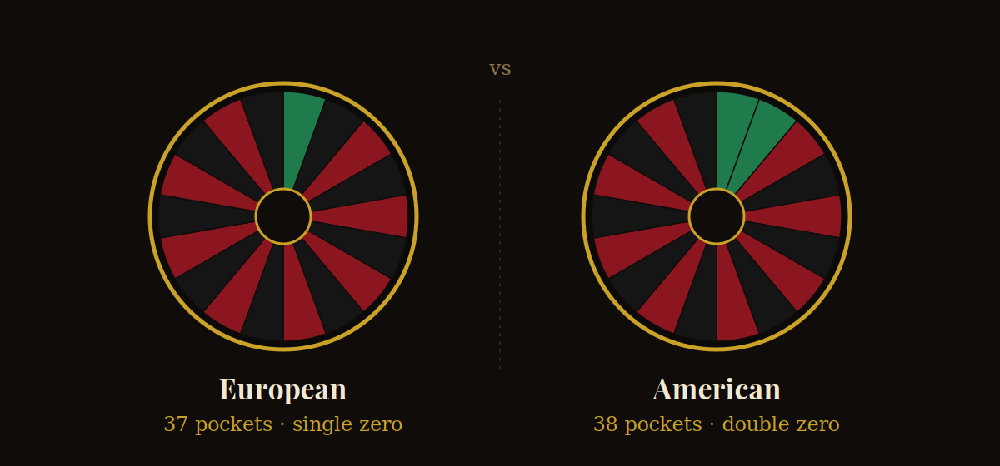

If you've ever sat down at two different roulette tables and felt like one was "luckier" than the other, you weren't imagining things. European and American roulette look almost identical, but one small design choice separates them — and it has a bigger effect on your money than most players realize.
The short answer
European roulette has 37 pockets (numbers 1–36 plus a single zero). American roulette has 38 pockets (numbers 1–36 plus a zero and a double zero). That single extra pocket nearly doubles the house edge, from 2.70% on European wheels to 5.26% on American ones.
That doesn't mean American roulette is unplayable — it means you should know which wheel you're sitting at before you decide how much to bet.
Why one extra pocket matters so much
Every number you don't bet on is a number the house can win on. Adding a second zero doesn't just add one more losing outcome — it changes the math behind every single bet on the table, from straight-up numbers to even-money bets like red/black or odd/even.
Here's the practical version: on a $10 flat bet repeated over time, a European wheel is expected to cost you about 27 cents per spin on average. The same bet on an American wheel costs closer to 53 cents per spin. Neither number sounds dramatic on its own, but across a full session, the gap adds up.
| European roulette | American roulette | |
|---|---|---|
| Pockets | 37 (single zero) | 38 (double zero) |
| House edge | 2.70% | 5.26% |
| Best for | Longer sessions, lower cost per spin | Faster-paced play, wider US availability |

Does the "La Partage" or "En Prison" rule change anything?
Some European tables add a rule called La Partage or En Prison, which returns half your stake (or holds it for the next spin) if the ball lands on zero and you placed an even-money bet. Where available, this cuts the house edge on those bets roughly in half again, down to about 1.35%. It's one of the best-value bets in any casino, online or offline — but it only applies to even-money wagers (red/black, high/low, odd/even), and not every table offers it. Always check the table rules before assuming it's active.
Does the betting system I use matter more than the wheel?
No. Systems like Martingale, Fibonacci, or D'Alembert change how you size your bets over a session, not the underlying odds of any individual spin. The house edge is built into the wheel itself — no staking pattern removes it, because each spin is an independent event with no memory of the last one. If you see a system marketed as "guaranteed" to beat roulette, that claim doesn't hold up mathematically, regardless of which wheel you're playing.
Where a system can help is structure: giving yourself a clear stopping point (a loss limit and a win target) is a genuinely useful habit — just don't confuse a betting pattern with an edge over the house.
Live dealer roulette: which wheel are you actually playing?
Most live dealer platforms clearly label their tables as European or American, but it's worth double-checking before you sit down, especially on unfamiliar sites. If a table isn't labeled, count the pockets: one green zero means European rules, two greens means American.
The takeaway
If you have a choice between the two — and online, you usually do — European roulette gives you better odds for the exact same game. The rules are easy to understand, the difference is a single pocket, and it's one of the simplest ways to stretch your bankroll further without changing how you actually play.
This article is for informational purposes only and does not constitute gambling, financial, or legal advice. Must be 18+ (or the legal age in your jurisdiction) to gamble. Please gamble responsibly.